Optical-to-Electrical Receiver
Designed and experimentally validated a low-power optical-to-electrical receiver for converting photodiode current into 12 steps of a controlled voltage output. The component selection and circuit topology was optimized around competing requirements for bandwidth, linearity, and power consumption.
Project details
Design Specifications
The receiver was designed around a constrained set of technical specifications. Rather than optimizing a single circuit parameter, I balanced bandwidth, power, supply voltage, transistor operating region, and output resolution to produce a practical receiver architecture. I designed two boards: one to target visible light with a 50KHz bandwidth and one to target near-IR fiber-optic frequencies with a 100KHz bandwidth.
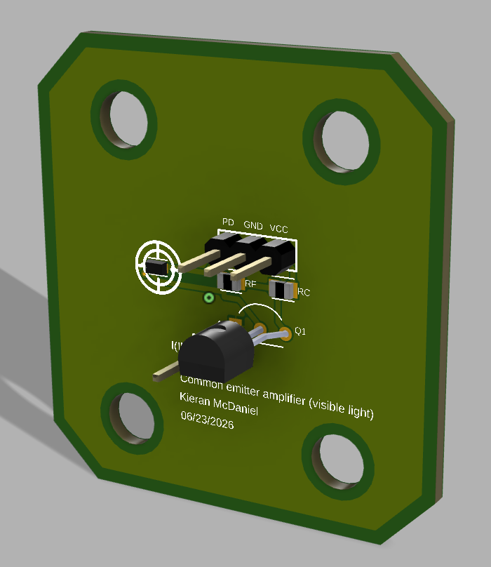
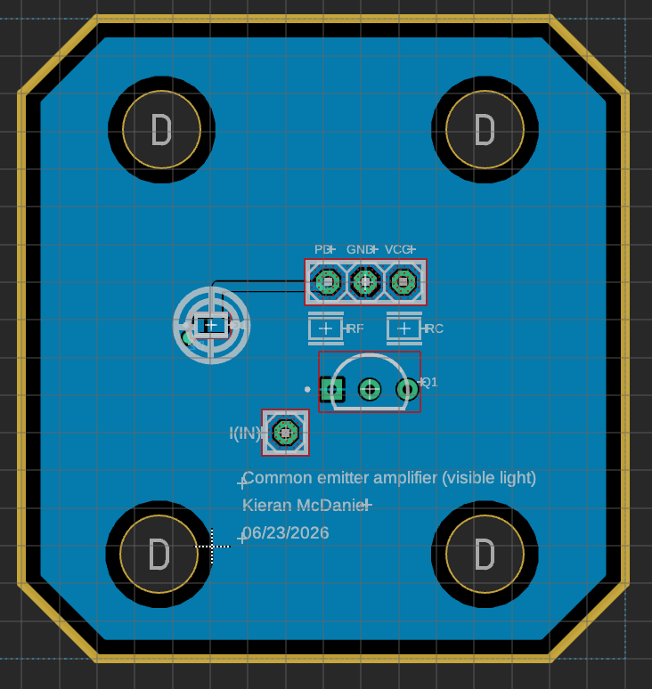
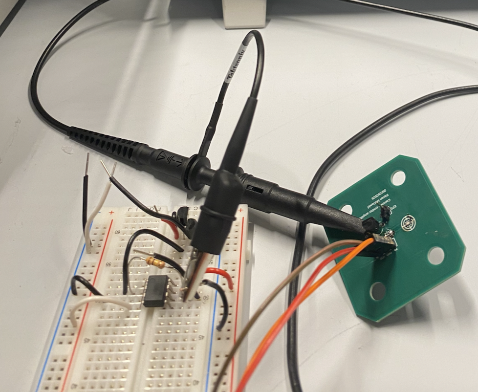
3D renderings, routing diagram, and final product for a PCB board of a common emitter amplifier circuit.
Operating-Point Optimization
A central design challenge was selecting a transistor operating point that could accommodate the photodiode's current output while maintaining sufficient linearity and voltage swing.
I characterized the transistor response by sweeping the base current and measuring the resulting collector voltage. This allowed me to set collector and feedback ressitor values that would ensure the transistor's linear region matched the expected photodiode current range. I then adjusted the feedback path to refine the operating point without negatively impacting gain and power consumption.
The final design reduced power consumption from approximately 18 mW to 5 mW without sacrificing linearity or the ~4V voltage headroom. This required balancing the reduction in bias current against the resulting changes in gain, linearity, bandwidth, and usable dynamic range rather than simply minimizing current draw.
Simulation & Frequency-Response Analysis
I developed models for both PCBs in LTspice and used simulation to evaluate the circuit's operating point, gain, feedback behavior, and frequency response before and after fabrication.
The initial measured frequency response differed from the simulated high-frequency PCB model. I traced the gain through the circuit to identify the source of the mismatch, which revealed that the current mirror gain had been overlooked in my calculations of transimpedance gain. This made the transimpedance bandwidth look higher than it actually was.
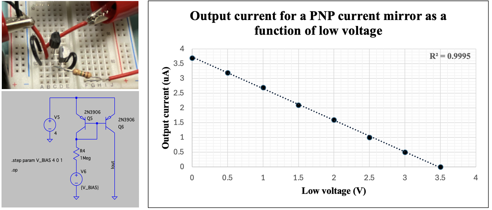
Experimental characterization of the PNP current mirror using a voltage sweep on the reference transistor's collector.
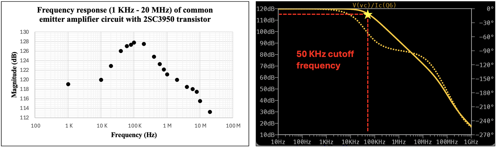
Initial mismatch between simulated and observed bandwidth. Observed bandwidth is artifically increased because of current mirror gain, which was not factored into the calculations.
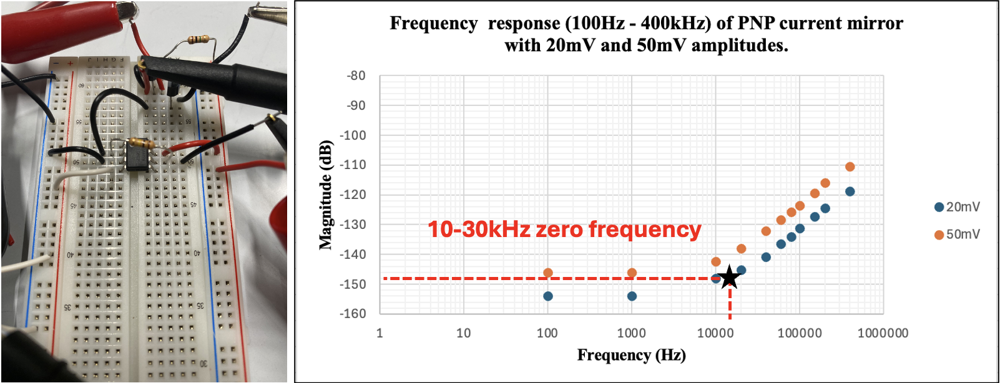
Current mirror gain measured on the bench. Zero frequency point observed at 35KHz.
I independently characterized the current mirror on the bench and compared its measured behavior with simulation. Incorporating the frequency-dependent current-mirror response into the analysis allowed me to correct the observed bandwidth and have it match the simulating bandwidth of 50KHz. I altered the current mirror reference resistor increasing bandwidth from 30KHz to 200KHz. This change in the current mirror driver increased the bandwdith of my CEA by 2x.
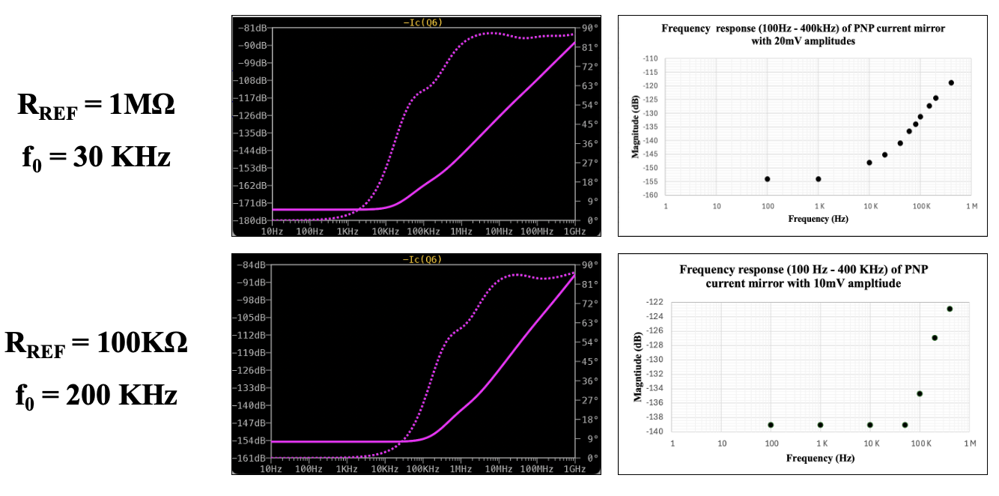
Increasing current mirror bandwidth from 30KHz to 200KHz by tweaking reference resistor magnitude.
Final Improved Bandwidth
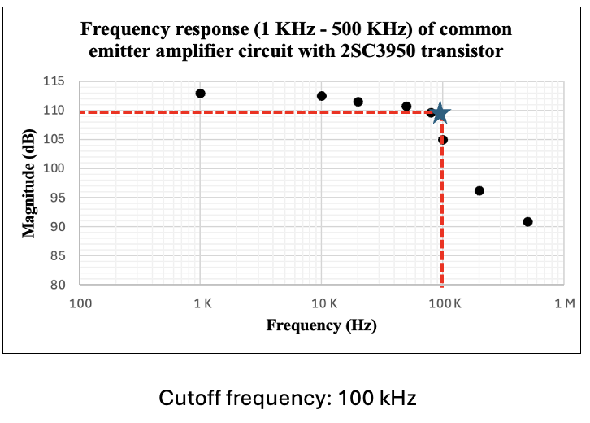
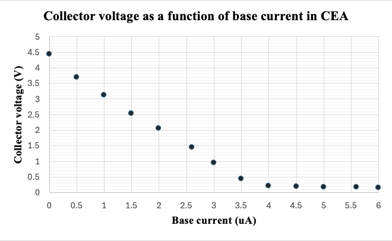
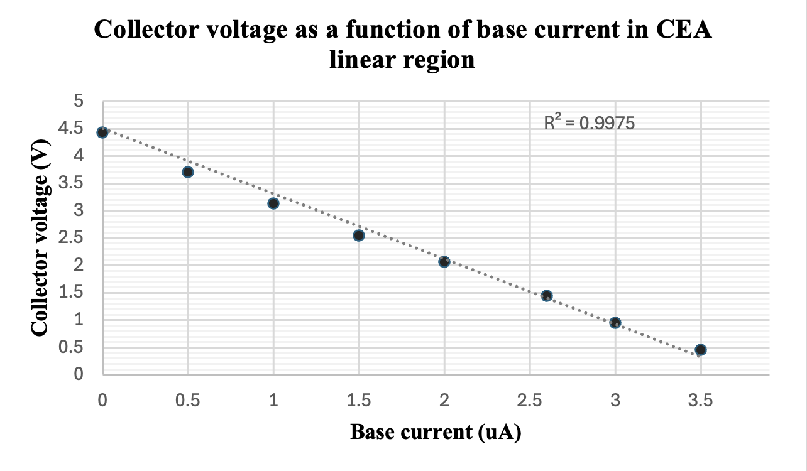
Photodiode Interface & Linear Region
The receiver was designed to interface directly with the current output of a photodiode. I optimized the transistor's operating region so that its response remained useful across the expected input-current range, allowing the circuit to translate small changes in photodiode current into a predictable voltage response.
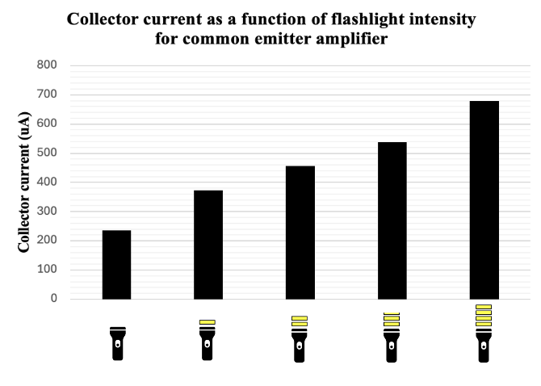
Collector current increasing as light intensity increases.
Validation Board
To test the circuit (as well as other circuits in the lab), I designed a validation PCB. The board integrates eight DAC channels, power delivery, clocking circuitry, and an XEM-series FPGA interface.
The validation platform allows circuit behavior to be measured systematically across different bias points and input conditions.
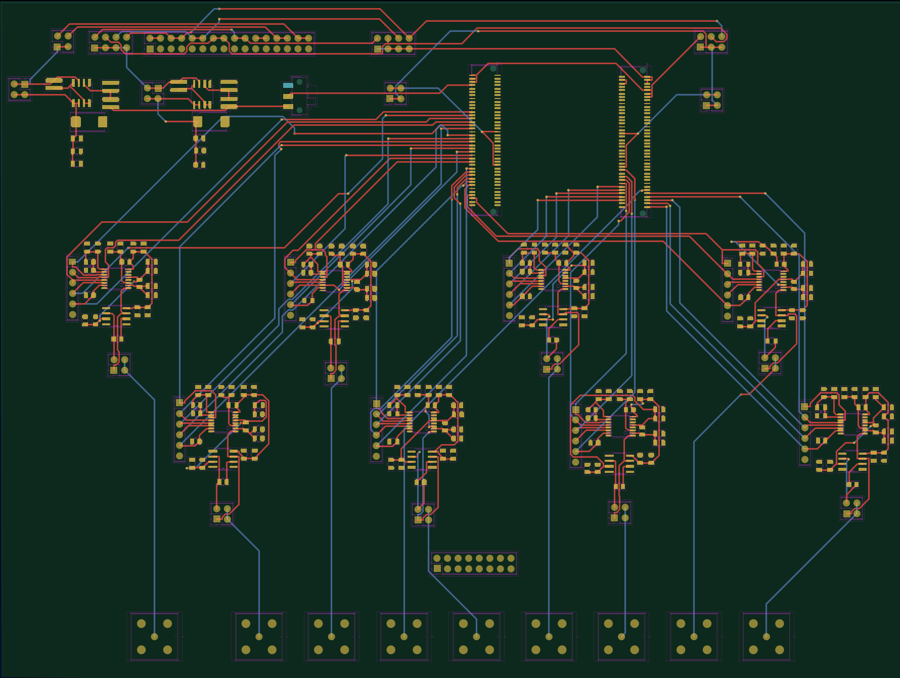
Routing diagram for the validation board in KiCAD.
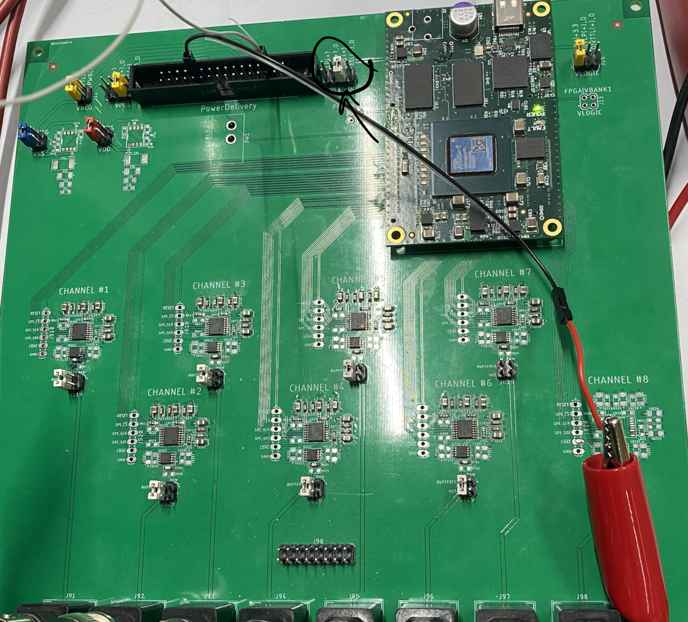
Shipped validation board.
Engineering Skills
- Analog Circuit Design
- PCB Design & Layout
- LTspice Simulation
- BJT Biasing
- Operating-Point Optimization
- Feedback Network Design
- Photodiode Signal Conditioning
- Frequency-Response Analysis
- Power Optimization
- Hardware Validation
- Bench Characterization
- Parasitic Analysis
- DAC-Controlled Testing
- FPGA Test Interfaces
- Mixed-Signal Design
- Root-Cause Debugging